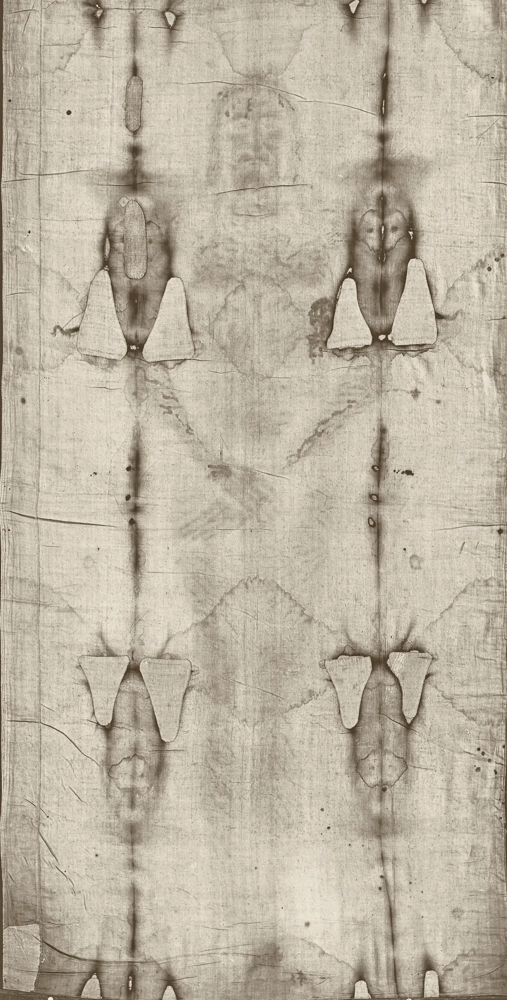

The wounds, and what the Gospels say
Click a number on the cloth or a wound in the list. Each mark is explained the way forensic pathologists describe it, next to the Gospel verse it corresponds to, and the skeptic's note where there is one.


A Roman crucifixion was a public execution meant to humiliate. The Gospels describe the one that matters here in plain detail. The cloth records an execution with the same features, including some that medieval art got wrong.
Forehead puncture flows
Several blood flows run down the forehead from puncture points. One flow is shaped like the figure 3 (often called the epsilon), which Bucklin explains as blood following the creases of the skin.
The soldiers twisted thorns into a crown and put it on his head, and dressed him in a purple garment.
Bucklin, Viewpoint of a Forensic Pathologist · Bucklin, Autopsy on the Man of the Shroud
Face injuries
Bucklin reports swelling over the right cheek, partial closing of the right eye, a slight bend in the nose and an abrasion at the nose tip. Bevilacqua and D'Arienzo instead describe the right eye as sunken from nerve injury.
They spat on him, and took the reed and struck him on the head.
Bucklin, Viewpoint of a Forensic Pathologist · Bevilacqua and D'Arienzo 2015, MATEC 36:03003
Scratches and dirt at the nose
Bucklin describes scratches and dirt in the nose area, consistent with the face striking the ground in a fall. Falls on the way to execution are tradition, not Gospel.
Bucklin, Viewpoint of a Forensic Pathologist · Nitowski 1986
Lowered right shoulder
Bevilacqua and D'Arienzo report the right shoulder lowered by about 15 degrees and read it as a dislocated right humerus, perhaps from a fall while carrying the beam.
Bevilacqua and D'Arienzo 2015, MATEC 36:03003 · Bevilacqua, Fanti, D'Arienzo 2017, Open Journal of Trauma
Nail wound at the wrist
A blood mark on the back of the left hand sits toward the wrist, with two rivulets about 10 degrees apart running from it. Bucklin calculates the arms were raised about 65 degrees and that the man shifted position. Barbet placed the nail in Destot's space in the wrist; Zugibe argues it entered the upper palm and exited at the wrist.
Unless I see in his hands the print of the nails, put my finger into the print of the nails, and put my hand into his side, I will not believe.
Bucklin, Autopsy on the Man of the Shroud · Zugibe 1995, Pierre Barbet Revisited
Thumbs not visible
Each hand shows only four fingers. Barbet and Bucklin explain this by nerve damage pulling the thumbs into the palms; Zugibe says the thumbs simply rest in front of the index fingers and did not touch the cloth.
Zugibe 1995, Pierre Barbet Revisited · Bucklin, Autopsy on the Man of the Shroud
Blood flows along the forearms
Streams of blood run from the wrists along the forearms toward the elbows, as expected if the arms were raised above the head while bleeding.
where they crucified him, and with him two others, on either side one, and Jesus in the middle.
Borrini and Garlaschelli, J. Forensic Sciences · Bucklin, Autopsy on the Man of the Shroud
Side wound with blood and clear fluid
The largest bloodstain lies on the right chest with an oval skin wound at its upper edge. Bucklin sees blood with clear watery fluid and suggests pleural fluid from heart failure; Bevilacqua and D'Arienzo place the wound in the 6th intercostal space, about 4.5 cm wide.
However, one of the soldiers pierced his side with a spear, and immediately blood and water came out.
Bucklin, Viewpoint of a Forensic Pathologist · Bevilacqua and D'Arienzo 2015, MATEC 36:03003
Scourge marks (front)
Similar paired marks appear on the chest and the front of the legs, wrapping round from the back. Bucklin notes they are absent from the arms and forearms.
So Pilate then took Jesus and flogged him.
Knee abrasions
Popular accounts describe swelling and scraping on the knees from repeated falls. Bucklin notes only that the left knee is slightly bent.
Graves 2021, National Catholic Register · Bucklin, Viewpoint of a Forensic Pathologist
Rigor mortis posture
Bucklin reads overall stiffness as rigor mortis, with the left knee slightly bent and the leg position kept after death. Bevilacqua and D'Arienzo describe the head bent forward and turned, and argue a body in rigor could not be fully straightened.
When Jesus therefore had received the vinegar, he said, “It is finished!” Then he bowed his head and gave up his spirit.
Bucklin, Autopsy on the Man of the Shroud · Bevilacqua and D'Arienzo 2015, MATEC 36:03003
Puncture wounds on the back of the head
A row of blood marks circles the back of the scalp, with more marks high on the crown. Bucklin argues this fits a cap of thorns covering the whole head rather than the narrow ring shown in most European art.
The soldiers twisted thorns into a crown and put it on his head, and dressed him in a purple garment.
Shoulder blade abrasions
Two broad discoloured areas over the shoulder blades look like abrasions from a heavy, rough object. Pathologists read them as marks from carrying the crossbeam.
He went out, bearing his cross, to the place called “The Place of a Skull”, which is called in Hebrew, “Golgotha”,
Bucklin, Viewpoint of a Forensic Pathologist · Bucklin, Autopsy on the Man of the Shroud
Scourge marks (back)
More than 100 small paired or dumbbell-shaped marks spread from the shoulders down to the calves. Bucklin calls them bifid and hard to count; Zugibe notes a three-thonged whip giving 40 lashes would leave about 120 marks. They read as small skin breaks with blood, not bruises.
So Pilate then took Jesus and flogged him.
Bucklin, Viewpoint of a Forensic Pathologist · Zugibe, Turin 2000 lecture · Freeman 2014 (summary)
Blood across the lower back
A band of blood crosses the lower back. It is usually explained as blood and fluid that ran from the side wound when the body was moved and laid down.
However, one of the soldiers pierced his side with a spear, and immediately blood and water came out.
Nail wound in the feet
The back image shows the right foot with a clear puncture mark near the centre of the sole, and a less distinct left foot. Bevilacqua and D'Arienzo place the nail through the tarsal bones.
See my hands and my feet, that it is truly me. Touch me and see, for a spirit doesn’t have flesh and bones, as you see that I have.
Bucklin, Autopsy on the Man of the Shroud · Bevilacqua and D'Arienzo 2015, MATEC 36:03003
Why the blood on the arms runs two ways
On the forearms, thin rivulets of blood run at two slightly different angles, about ten degrees apart. Pathologists such as Robert Bucklin read this as the arms being held at two positions while the blood was flowing.
That fits how crucifixion kills. Hanging by the arms makes it hard to breathe out, so the victim has to push up on the nailed feet to take each breath, then slump again. Blood always runs straight down, so when the arms change angle, the trail on the skin changes direction. Press the button to see it.
The skeptic's best answer: a 2018 bloodstain pattern study by Matteo Borrini and Luigi Garlaschelli, using a volunteer and real blood flows, found the forearm trails need different arm positions than a single crucifixion pose, and judged some flows unrealistic. Defenders reply that a body that moved for hours would leave exactly such varied trails.
Why this matters
A forger in the 1300s would have to know details that his own culture did not know or did not show: that nails went through the wrist, that a Roman flagrum left dumbbell-shaped marks, that blood from a dead body separates into clot and serum. Skeptics answer that some of these details are disputed, and that the blood marks themselves have been studied with mixed results. Both sides are in the case file.